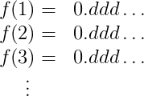
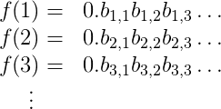
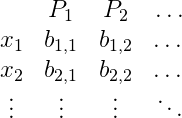

, 10 min read
Methods of Proof — Diagonalization
Original post is here eklausmeier.goip.de/blog/2015/06-13-methods-of-proof-diagonalization.
Very clear presentation on the uncountability of the real numbers, and the halting problem.
Further keywords: Cantor, natural numbers, real numbers, diagonalization, bijection, Turing halting problem, proof by contradiction.
-- -- -- Quote -- -- --
A while back we featured a post about why learning mathematics can be hard for programmers, and I claimed a major issue was not understanding the basic methods of proof (the lingua franca between intuition and rigorous mathematics). I boiled these down to the "basic four," direct implication, contrapositive, contradiction, and induction. But in mathematics there is an ever growing supply of proof methods. There are books written about the "probabilistic method," and I recently went to a lecture where the "linear algebra method" was displayed. There has been recent talk of a "quantum method" for proving theorems unrelated to quantum mechanics, and many more.
So in continuing our series of methods of proof, we'll move up to some of the more advanced methods of proof. And in keeping with the spirit of the series, we'll spend most of our time discussing the structural form of the proofs. This time, diagonalization.
Diagonalization
Perhaps one of the most famous methods of proof after the basic four is proof by diagonalization. Why do they call it diagonalization? Because the idea behind diagonalization is to write out a table that describes how a collection of objects behaves, and then to manipulate the "diagonal" of that table to get a new object that you can prove isn't in the table.The simplest and most famous example of this is the proof that there is no bijection between the natural numbers and the real numbers. We defined injections, and surjections and bijections, in two earlier posts in this series, but for new readers a bijection is just a one-to-one mapping between two collections of things. For example, one can construct a bijection between all positive integers and all even positive integers by mapping $n$ to $2n$. If there is a bijection between two (perhaps infinite) sets, then we say they have the same size or cardinality. And so to say there is no bijection between the natural numbers and the real numbers is to say that one of these two sets (the real numbers) is somehow "larger" than the other, despite both being infinite in size. It's deep, it used to be very controversial, and it made the method of diagonalization famous. Let's see how it works.
Theorem: There is no bijection from the natural numbers $\mathbb{N}$ to the real numbers $\mathbb{R}$.
Proof. Suppose to the contrary (i.e., we're about to do proof by contradiction) that there is a bijection $f: \mathbb{N} \to \mathbb{R}$. That is, you give me a positive integer $k$ and I will spit out $f(k)$, with the property that different $k$ give different $f(k)$, and every real number is hit by some natural number $k$ (this is just what it means to be a one-to-one mapping).
First let me just do some setup. I claim that all we need to do is show that there is no bijection between $\mathbb{N}$ and the real numbers between 0 and 1. In particular, I claim there is a bijection from $(0,1)$ to all real numbers, so if there is a bijection from $\mathbb{N} \to (0,1)$ then we could combine the two bijections. To show there is a bijection from $(0,1) to \mathbb{R}$, I can first make a bijection from the open interval $(0,1)$ to the interval $(-\infty, 0) \cup (1, \infty)$ by mapping $x$ to $1/x$. With a little bit of extra work (read, messy details) you can extend this to all real numbers. Here's a sketch: make a bijection from $(0,1)$ to $(0,2)$ by doubling; then make a bijection from $(0,2)$ to all real numbers by using the $(0,1)$ part to get $(-\infty, 0) \cup (1, \infty)$, and use the $[1,2)$ part to get $[0,1]$ by subtracting 1 (almost! To be super rigorous you also have to argue that the missing number 1 doesn't change the cardinality, or else write down a more complicated bijection; still, the idea should be clear).
Okay, setup is done. We just have to show there is no bijection between $(0,1)$ and the natural numbers.
The reason I did all that setup is so that I can use the fact that every real number in $(0,1)$ has an infinite binary decimal expansion whose only nonzero digits are after the decimal point. And so I'll write down the expansion of $f(1)$ as a row in a table (an infinite row), and below it I'll write down the expansion of $f(2)$, below that $f(3)$, and so on, and the decimal points will line up. The table looks like this.

The $d$'s above are either 0 or 1. I need to be a bit more detailed in my table, so I'll index the digits of $f(1)$ by $b_{1,1}, b_{1,2}, b_{1,3}, dots$, the digits of $f(2)$ by $b_{2,1}, b_{2,2}, b_{2,3}, dots$, and so on. This makes the table look like this

It's a bit harder to read, but trust me the notation is helpful.
Now by the assumption that $f$ is a bijection, I'm assuming that every real number shows up as a number in this table, and no real number shows up twice. So if I could construct a number that I can prove is not in the table, I will arrive at a contradiction: the table couldn't have had all real numbers to begin with! And that will prove there is no bijection between the natural numbers and the real numbers.
Here's how I'll come up with such a number $N$ (this is the diagonalization part). It starts with 0., and it's first digit after the decimal is $1-b_{1,1}$. That is, we flip the bit $b_{1,1}$ to get the first digit of $N$. The second digit is $1-b_{2,2}$, the third is $1-b_{3,3}$, and so on. In general, digit $i$ is $1-b_{i,i}$.
Now we show that $N$ isn't in the table. If it were, then it would have to be $N = f(m)$ for some $m$, i.e. be the $m$-th row in the table. Moreover, by the way we built the table, the $m$-th digit of $N$ would be $b_{m,m}$. But we defined $N$ so that it's $m$-th digit was actually $1-b_{m,m}$. This is very embarrassing for $N$ (it's a contradiction!). So $N$ isn't in the table. $\square$
It's the kind of proof that blows your mind the first time you see it, because it says that there is more than one kind of infinity. Not something you think about every day, right?
The Halting Problem
The second example we'll show of a proof by diagonalization is the Halting Theorem, proved originally by Alan Turing, which says that there are some problems that computers can't solve, even if given unbounded space and time to perform their computations. The formal mathematical model is called a Turing machine, but for simplicity you can think of "Turing machines" and "algorithms described in words" as the same thing. Or if you want it can be "programs written in programming language X." So we'll use the three words "Turing machine," "algorithm," and "program" interchangeably.
The proof works by actually defining a problem and proving it can't be solved. The problem is called the halting problem, and it is the problem of deciding: given a program $P$ and an input $x$ to that program, will $P$ ever stop running when given $x$ as input? What I mean by "decide" is that any program that claims to solve the halting problem is itself required to halt for every possible input with the correct answer. A "halting problem solver" can't loop infinitely!
So first we'll give the standard proof that the halting problem can't be solved, and then we'll inspect the form of the proof more closely to see why it's considered a diagonalization argument.
Theorem: The halting program cannot be solved by Turing machines.
Proof. Suppose to the contrary that $T$ is a program that solves the halting problem. We'll use $T$ as a black box to come up with a new program I'll call meta-$T$, defined in pseudo-python as follows.
def metaT(P):
run T on (P,P)
if T says that P halts:
loop infinitely
else:
halt and output "success!"
In words, meta-$T$ accepts as input the source code of a program $P$, and then uses $T$ to tell if $P$ halts (when given its own source code as input). Based on the result, it behaves the opposite of $P$; if $P$ halts then meta-$T$ loops infinitely and vice versa. It's a little meta, right?
Now let's do something crazy: let's run meta-$T$ on itself! That is, run
metaT(metaT)
So meta. The question is what is the output of this call? The meta-$T$ program uses $T$ to determine whether meta-$T$ halts when given itself as input. So let's say that the answer to this question is "yes, it does halt." Then by the definition of meta-$T$, the program proceeds to loop forever. But this is a problem, because it means that metaT(metaT) (which is the original thing we ran) actually does not halt, contradicting $T$'s answer! Likewise, if $T$ says that metaT(metaT) should loop infinitely, that will cause meta-$T$ to halt, a contradiction. So $T$ cannot be correct, and the halting problem can't be solved. $\square$
This theorem is deep because it says that you can't possibly write a program to which can always detect bugs in other programs. Infinite loops are just one special kind of bug.
But let's take a closer look and see why this is a proof by diagonalization. The first thing we need to convince ourselves is that the set of all programs is countable (that is, there is a bijection from $\mathbb{N}$ to the set of all programs). This shouldn't be so hard to see: you can list all programs in lexicographic order, since the set of all strings is countable, and then throw out any that are not syntactically valid programs. Likewise, the set of all inputs, really just all strings, is countable.
The second thing we need to convince ourselves of is that a problem corresponds to an infinite binary string. To do this, we'll restrict our attention to problems with yes/no answers, that is where the goal of the program is to output a single bit corresponding to yes or no for a given input. Then if we list all possible inputs in increasing lexicographic order, a problem can be represented by the infinite list of bits that are the correct outputs to each input.
For example, if the problem is to determine whether a given binary input string corresponds to an even number, the representation might look like this:
`010101010101010101...`
Of course this all depends on the details of how one encodes inputs, but the point is that if you wanted to you could nail all this down precisely. More importantly for us we can represent the halting problem as an infinite table of bits. If the columns of the table are all programs (in lex order), and the rows of the table correspond to inputs (in lex order), then the table would have at entry $(x,P)$ a 1 if $P(x)$ halts and a 0 otherwise.

here $b_{i,j}$ is 1 if $P_j(x_i)$ halts and 0 otherwise. The table encodes the answers to the halting problem for all possible inputs.
Now we assume for contradiction sake that some program solves the halting problem, i.e. that every entry of the table is computable. Now we'll construct the answers output by meta-$T$ by flipping each bit of the diagonal of the table. The point is that meta-$T$ corresponds to some row of the table, because there is some input string that is interpreted as the source code of meta-$T$. Then we argue that the entry of the table for $(textup{meta-}T, textup{meta-}T)$ contradicts its definition, and we're done!
So these are two of the most high-profile uses of the method of diagonalization. It's a great tool for your proving repertoire.
Until next time!